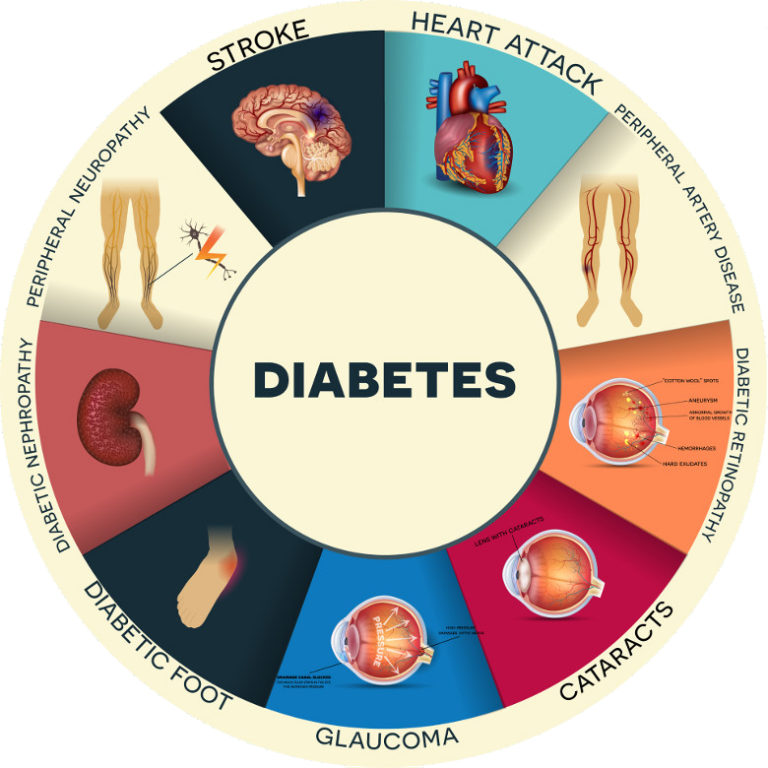

O que é Diabetes?
O diabetes é uma doença crônica que ocorre quando o corpo não consegue produzir insulina suficiente ou não consegue utilizá-la adequadamente, é uma síndrome metabólica de origem múltipla, decorrente da falta de insulina e/ou da incapacidade e/ou falta de insulina exercer adequadamente seus efeitos, caracterizando altas taxa de açúcar no sangue ( hiperglicemia) de forma permanente.
Sintomas Comuns
Diabetes 1
- Sede anormal e boca seca
- Urinar frequentemente
- Urinar na cama
- Perda de energia e fadiga extrema
- Fome constante
- Perda de peso repentina
- Visão desfocada
Diabetes 2
- Urinar excessivamente
- Sede excessiva
- Fome extrema
- Visão desfocada
- Dormência e formigueiro nas mãos e pés
- Cicatrização lenta de feridas e infeções recorrentes
Tratamento e Cuidados
O tratamento do diabetes pode incluir mudanças na dieta, atividade física, medicamentos orais, injeções de insulina e, em alguns casos, cirurgia bariátrica.
Uma boa alimentação é chave no tratamento de qualquer doença, mas seu impacto é elevado no caso da diabetes, que tem relação direta com o consumo de açúcar. Coma mais frutas e verduras, priorizando produtos integrais no caso dos carboidratos. Reduzir os industrializados também é um passo muito efetivo.